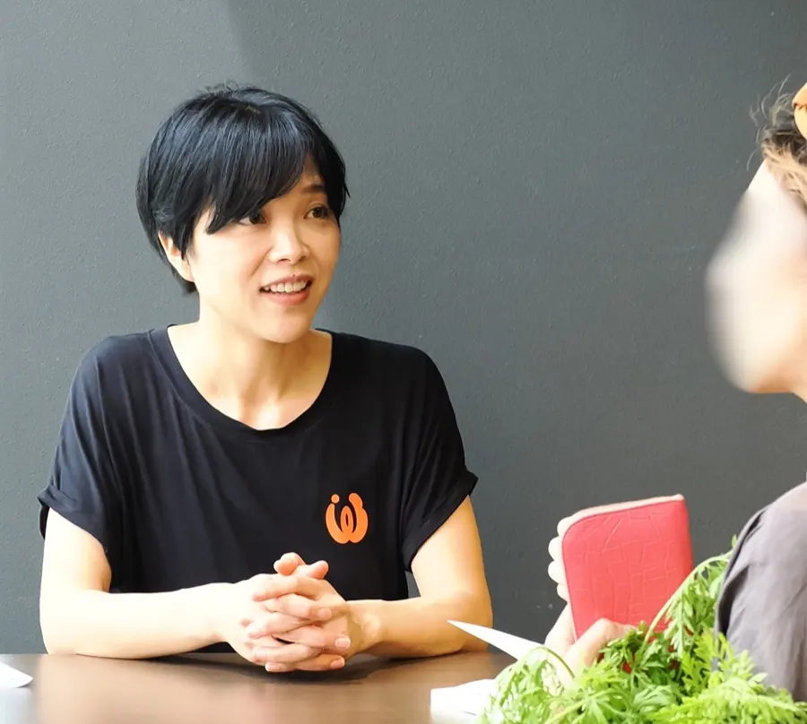
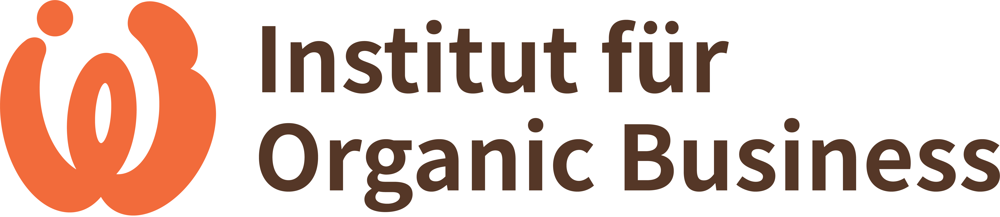
オーガニックを仕事にしている方へ
お客さまに「高いですね」と言われたとき、
商品の価値をもっと伝えたいと
思ったことはありませんか？
なぜ、お客さまを教育する起業家には、
お客さまも、仲間も、
チャンスも集まってくるのか？
お客さまが商品の価値を知ることは、あなたの事業を応援したくなるきっかけにもなります。その第一歩は、あなた自身がオーガニックを深く学ぶことです。専門家コースの最初の32分の授業を無料で公開します。
無料の授業動画を受け取る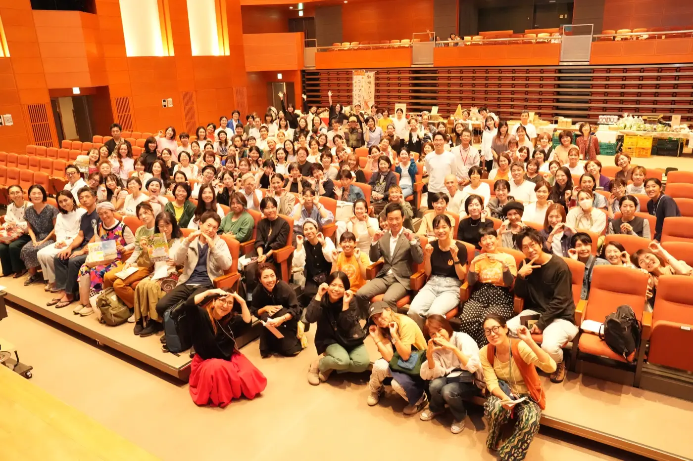
2024年10月 奈良サミットの会場
講演・講座の様子
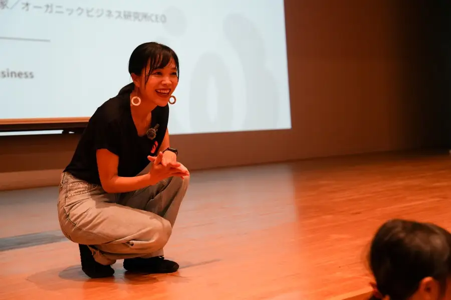
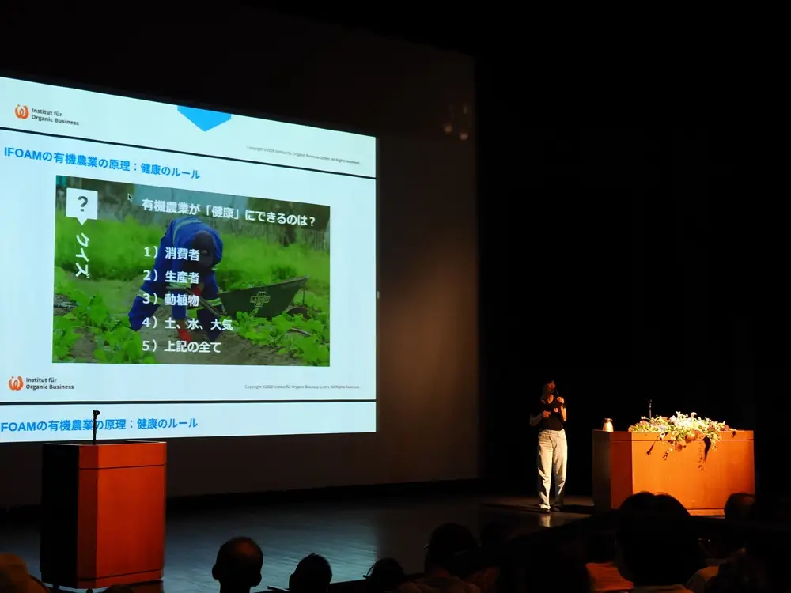
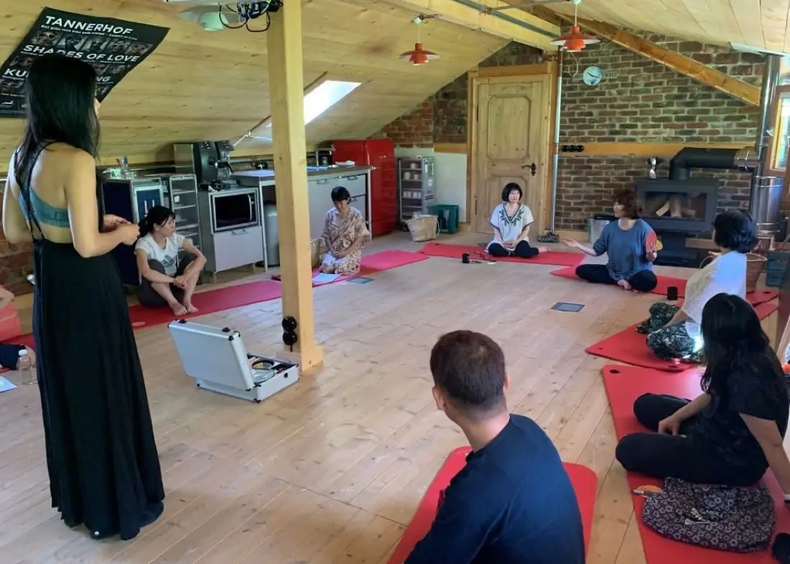
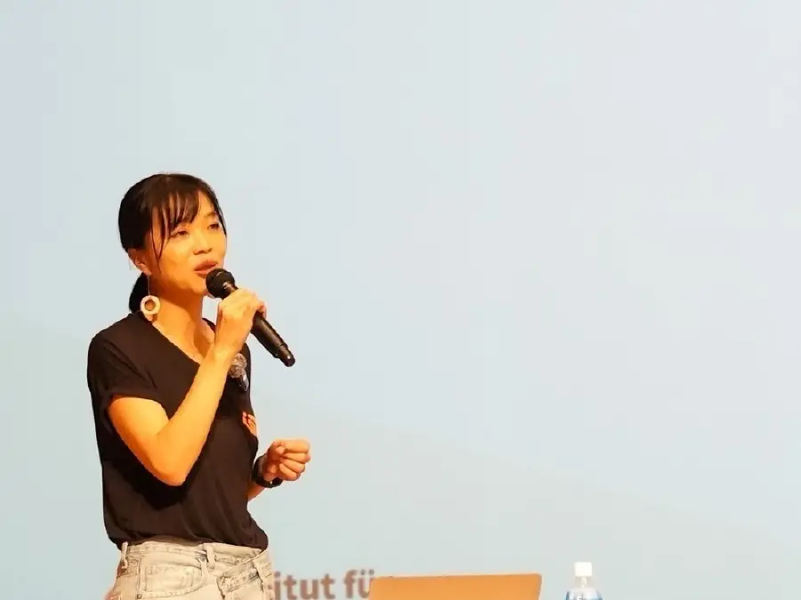
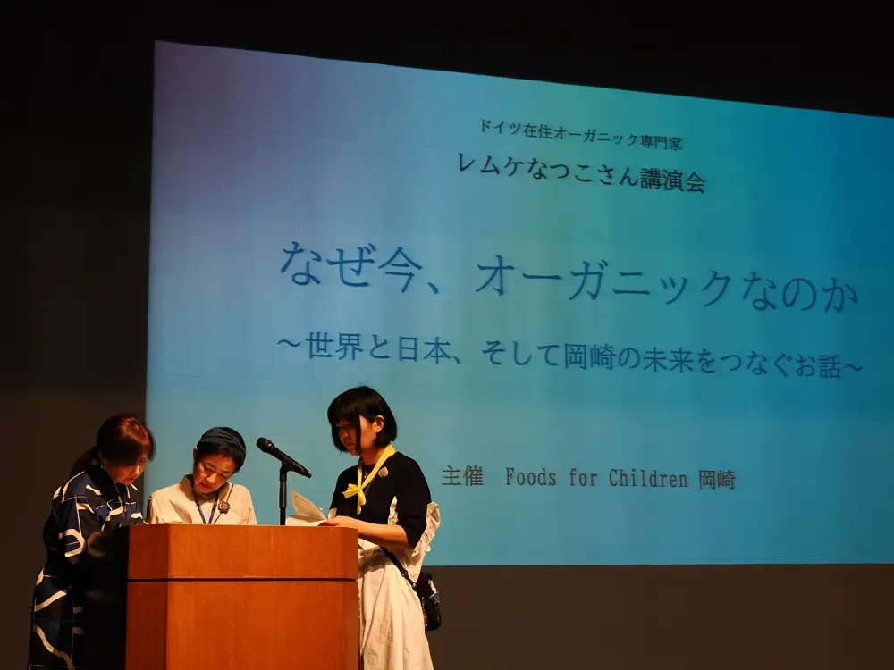
2024年10月 奈良サミット／2026年5月 FFC岡崎主催の講演会／ドイツ・ビオホテルでの講座
- 「オーガニックって、何ですか？」とお客さまに聞かれて、言葉に詰まった。
- 商品の良さを伝えたいのに、「高いですね」の一言で話が終わってしまう。
- オーガニックについて話すと「意識が高いね」と言われるので、だんだん話さなくなった。
オーガニックを仕事にしているからこそ、
こんな経験はありませんか？
オーガニックスーパーを運営する川田むつみさんも、かつてこんな経験をされていました。

「お客様から『オーガニックって何ですか？』と尋ねられるたびに、自信を持って答えることができず、自分の無知さに直面しました。」
オーガニックスーパー運営 川田むつみさん
お客さまにオーガニックのことをうまく説明できなくても、それはあなたのせいではありません。
日本では、オーガニックの本当の価値について学ぶ機会が、そもそもほとんどないからです。
お客さまを教育するためには、まず自分自身がオーガニックを理解し、お客さまにきちんと伝わっているかを確かめながら伝えることが大切です。
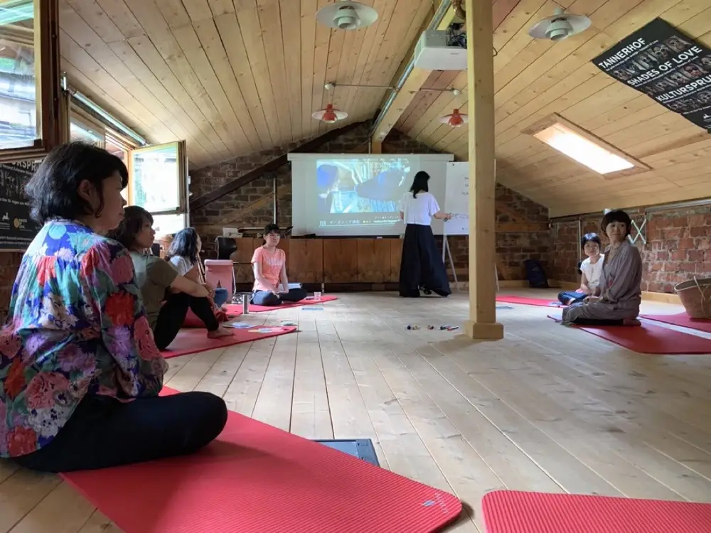
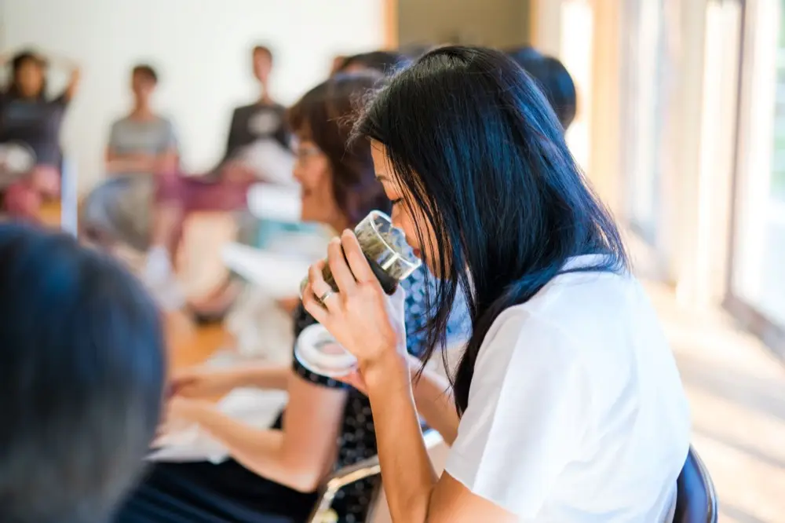
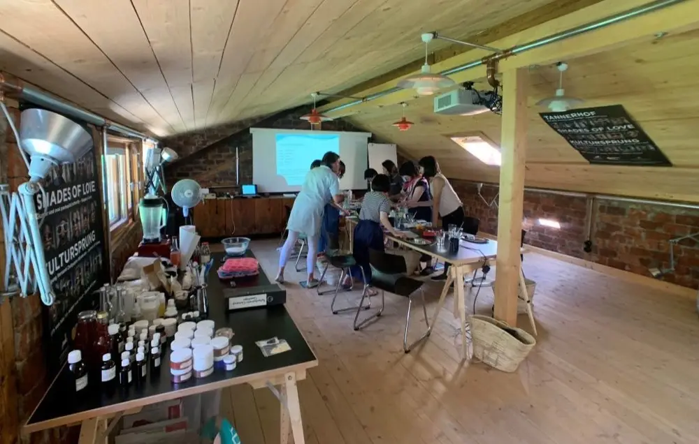
ドイツ・ビオホテルでの講座
WHYなぜ、教育が土台になるのか
なぜ、お客さまを教育する起業家は恵まれるのか？
お客さまとの出会いが仲間との出会いにつながり、思いがけない仕事のチャンスが訪れる。人も、お金も、チャンスも集まってくる背景には、教育を土台とした一つの流れがあります。
1 まず、自分自身が学ぶ。
自分が扱っている商品やサービスの価値を、どこまで自分の言葉で説明できるでしょうか？
まず大切なのは、自分自身が納得できる知識を得ることです。自分が深く理解しているからこそ、自信を持ってお客さまに伝えられるようになります。
2 「伝える」から「伝わる」へ。
お客さまを教育するとは、知識を一方的に伝えることではありません。お客さまが何を理解し、何に疑問を持っているのかを確かめながら伝えることです。
お客さまが商品の本当の価値を知ったとき、「これが欲しい」「この人から買いたい」という気持ちが生まれます。
3 教育は、ビジネスのすべての土台になる。
あなたの知識や考え方に共感したお客さまは、あなた自身を応援したくなります。
お客さまだけでなく、取引先や一緒に働く仲間も同じです。あなたが大切にしている思想や志に共感する人とのつながりから、新しい仕事やチャンスが生まれていきます。
4 AI時代だからこそ、知識がものをいう。
誰もが簡単に情報を得られる時代だからこそ、「何を買うか」だけでなく「誰から買うか」が大切になります。
お客さまとの信頼関係や小さなコミュニティを育てるためにも、自分の専門分野について誰よりも深く学び、知識を更新し続けることが大切です。
5 人が集まる方法を探すより、人が集まる自分になる。
自分の器以上のビジネスはできないと、私は考えています。
自分自身が学び、その知識を人のために活かし続ける。そんな起業家の思いや志に共感し、人が集まり、そこから新しい可能性が広がっていきます。
お客さまを教育する起業家になるための第一歩は、あなた自身がオーガニックの本質を学ぶことです。
あなたが日頃から大切にしているオーガニックの価値を、お客さまはどのくらい知っているのでしょうか？
農林水産省の調査から、こんなことが見えてきます。
61.4%
が、内容を今回初めて知った、または言葉を今回初めて聞いた
- 正確に知っていた8.6%
- 栽培方法か表示ルール、どちらか一方は知っていた30.1%
- 言葉は聞いたが、内容は今回初めて知った54.9%
- 言葉を今回初めて聞いた6.5%
出典：農林水産省「令和7年度 有機農業及び有機食品に関する意識・意向調査結果」（消費者3,000人・2025年11〜12月）。30.1%は「栽培方法・製造方法は知っていたが表示ルールは知らなかった」14.7%と「表示ルールは知っていたが栽培方法・製造方法は知らなかった」15.4%の合計。
この数字は、オーガニックの価値をお客さまに伝えられる余地が、まだまだあるということでもあります。
だからこそ、オーガニックを仕事にしているあなた自身が学び、お客さまの理解に合わせて、その価値を伝えることが大切です。
あなたのお店やサービスは、お客さまがオーガニックについて学ぶ場所にもなれるのです。
VOICE受講生の声
オーガニックを学んだ受講生は、周りから返ってくる反応が変わった

オーガニック専門家コースで学んだ、受講生本人の言葉です。
川田むつみさん
オーガニックスーパー「クランデール」「ココシーズンズ」運営（千葉県松戸市）
お客様から「オーガニックって何ですか？」と尋ねられるたびに、自信を持って答えることができず、自分の無知さに直面しました。
続きを読む
IOBで学んだ、エビデンスに基づくオーガニックの知識は、食の専門家として、オーガニック商品を扱う経営者としてブレない「軸」となり、自信を与えてくれました。
その学びを伝え続けた結果、私のインスタフォロワー数は4倍に成長。「オーガニックを正しく広めたい」と願う仲間たちとともに活動しながら、店舗も拡大し、ビジネスは順調に成長しています。（個人の感想です）
田中優介さん
農業法人を立ち上げ中（淡路島）
家族に「なんで自然農という選択をしたの？なんで肥料とか農薬を使わないの？」と聞かれたとき、単純にそうしたいから、ということでしか説明ができませんでした。
続きを読む
前までは、理解してくれないし、聞く耳も持たないというレベルでした。そんな人たちが、僕の活動を聞ける時間があれば「聞きに行くわ」と言ってくれた。すごい成果だなと思っています。

上鶴恵子さん
オーガニックショップSEN経営（山梨県富士川町）
お話を聞いてくれた経営者さんたちが「自分たちも力になりたい」と、たくさん入会してくれて、その後は畑の作業にも来てくださる。そんな活動の輪が広がりました。
続きを読む
勇気を持って一歩を踏み出して分かったことは、ちゃんと伝えれば、こんなに理解者が増えるんだということでした。

森 奈央さん
森のオーガニックショップBitteオーナー（北海道七飯町）
お店に来てくださる方は、やはりオーガニックに興味がある方なんです。じゃあ、興味がない方にどのように周知していくのか。
続きを読む
「お店の協力をしたい」「私も何かできることで協力したい」——講座をやっていると話すだけで、そんな声をいただけるようになりました。
リピーターの方が、最近増えてくださっています。

柳田夕希さん
ピラティス講師／フルオーガニック酵素ドリンク「Natural FLORA」製造販売
オーガニックは美容とか健康にいいということしか、私は知らなくて。そういうところじゃなくて、オーガニックが社会を変える仕組み、社会全体を幸せにする仕組みということを学んだのが、すごく自分の中で気づきがありました。
続きを読む
IOBを受講されている皆さんとのつながりで、お仕事にもつなげていただきました。クランデールさんですごく販売していただいて、人気をいただいていて、めちゃくちゃ嬉しいです。
入っていなかったら、本当にビジネスも成り立たないですし、オーガニックのことを話せる仲間もいなかったと思います。
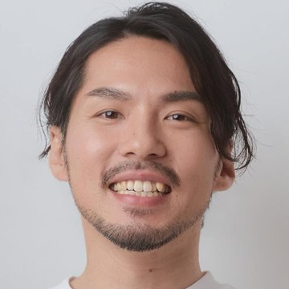
猿田一生さん
美容室オーナー／THE ORIENTAL JOURNEY（千葉県柏市）代表
一般社団法人 日本サステナブルサロン協会 代表理事
従業員時代はこの想いが理解されず、日々孤独を感じていました。
続きを読む
IOBでの学びは、私の信念を確固たるものにし、自信を持って発信する力を与えてくれました。
その結果、多くの方から支持を得ることができ、IOBのスクール生の方たちがたくさん来店してくれるようになったり、「ずっと、こんなサロンを探していた」と涙するお客様の姿を見たりしたときには、努力が報われたと感じました。
横にスワイプできます →
ここに置いた言葉は、書籍とインタビュー動画で本人が語ったものです（一部、読みやすく整えています）。
オーガニックを、
自分の言葉で届けるための
最初の授業
オーガニック専門家コースで、受講生が最初に学ぶ32分の授業を、そのまま無料で公開します。
オーガニックの定義・歴史・世界の考え方を、授業で知ります。
そのうえで、お客さまに聞かれたとき、何を拠りどころに答えればよいかが分かります。

ドイツ法人オーガニックビジネス研究所（IOB）代表。オーガニック教育の専門家。
- ドイツ政府給付型奨学金（DAAD）でホーヘンハイム大学大学院にて有機農業を専攻し、修士号を取得。
- オーガニックセクターの国際組織IFOAM – Organics Internationalのリーダーシップ研修に、日本人として初めて選抜される。
- 創業7年で延べ1,900人以上が学ぶ日本最大級のオーガニックコミュニティに。
- 大手オーガニックスーパー「ビオセボン」の年間成長研修（従業員300名以上）を担当（2026〜2027年）。
レムケなつこは、ドイツと日本の架け橋として、両国のオーガニック事業者をつなぐ活動も行っています。
- 農林水産省の助成を受け、日本の有機生産者を招待したドイツ人バイヤー商談会を主催（2018年）。
- 朝日新聞社と、ドイツ発のオーガニック専門見本市ビオファジャパン第1回を企画・実施（2024年）。
この無料授業では、オーガニックの定義や歴史、世界で共有されている考え方をお話しします。IOBのオーガニック専門家コースでは、その知識を自分の商品や活動に生かし、お客さまに伝える方法を学びます。
32分の授業で、
お客さまに聞かれたとき、あなたが拠りどころにする考え方が分かる
- 約32分。オーガニックの定義・ミニ歴史・世界で共有されている考え方・その真価を学びます
登録すると、授業動画のページと、IOBからのメールが届きます。届かない場合は、迷惑メールフォルダをご確認ください。配信はいつでも解除できます。
FREE LESSON無料でお渡しする授業
オーガニックの価値を広く知って、自分が何を届けたいかを考える
無料でお渡しするのは、オーガニック専門家コースで受講生が最初に学ぶ授業です。
オーガニックの定義、ミニ歴史、世界で共有されている考え方、その真価を、種から食卓まで一つにつなげて学びます。
約32分、6つのパートに分かれています。
オーガニックの価値が、自分にとっていいことだけでなく、社会や地球、未来世代にとってもいいものだと知る授業です。
ドイツIOBオーガニックスクール
オーガニックを、
自分の言葉で届けるための
最初の授業
AFTER
この授業を見終えたあと、あなたが手にする3つのこと
- 次に「オーガニックって、何ですか？」と聞かれたとき、話し出すための拠りどころ（世界で共有されている定義）が、手元に残る
- 「健康や安全」「環境にいい」に加えて、社会・地球・未来世代にとってのオーガニックの価値まで知ることができる
- 自分がなぜオーガニックを扱っているのかを、もう一度、自分の言葉で思い出す材料が手に入る
あなたから学びたい。
あなたから買いたい。
そんなふうに思ってくださるお客さまが増えたら、あなたのビジネスはどう変わるでしょうか？
あなたが学んだ知識をお客さまに伝え、お客さまが商品の価値を理解する。
そこから、あなたの考え方に共感する人、あなたを応援したくなる人、一緒に新しいことに挑戦する仲間とのつながりが生まれていきます。
その第一歩として、オーガニック専門家コースの最初の授業を無料で公開します。
お名前とメールアドレスを入れると、すぐに約32分の無料授業をご覧いただけるページをご案内します。
登録すると、授業動画のページと、IOBからのメールが届きます。配信はいつでも解除できます。